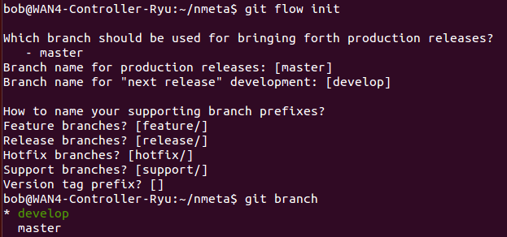

Contributing
Contributors are very welcome. There's certainly a lot of opportunity to make improvements! Here's how to contribute:
- All development is done on the Github repo
- Use the develop branch for development so that the master branch can be kept clean for downloads
- See Issues inspiration as to what you can work on
Using git flow
Git flow provides branching strategy and release management over the top of git. To set git flow up, go to the nmeta directory and run:
git flow init
Accept the defaults and it is now set up with develop branch selected:

*** Under Construction!!! ***
Updates to Website
The website is in a separate orphan branch called gh-pages
*** Under Construction!!! ***